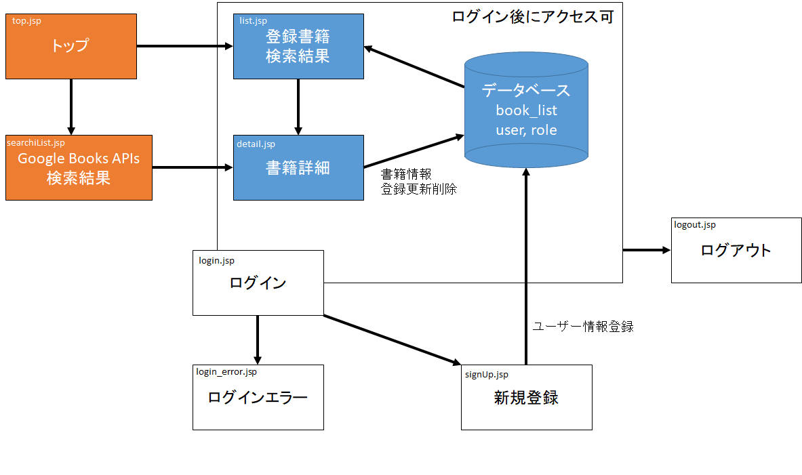
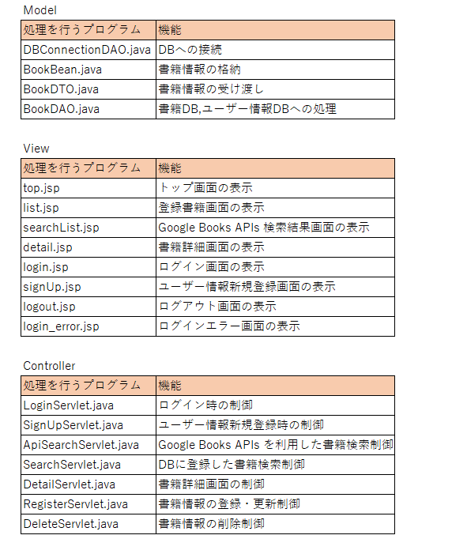
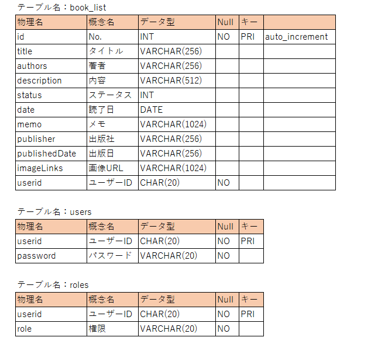

書籍管理アプリケーション
概要
制作の目的
- 訓練で学んだ技術を使ったwebアプリケーションを作りたい
- 読書が趣味なので自宅の書籍を管理したい
- 未読既読購入予定、読了日、感想をDBで保存したい
- APIにも触れてみたい
そこで、JSP及びServletを経由しデータベースを使用した書籍情報を管理するシステムを作ることとした
また、Google Books APIs を利用し外部からデータを取得できるようにする
開発期間
3週間
機能
- ユーザーのログイン機能
- データの登録・変更・削除の機能
- 登録データの検索
- Google Books APIs による検索 > 検索結果からデータを登録
概要図

MVCパターン

テーブル設定

開発環境
- OS
- Windows 10
- 開発ツール
- Eclipse 2021/Java version.11
- Webサーバ
- Apache Tomcat/10.0
- DB
- MySQL